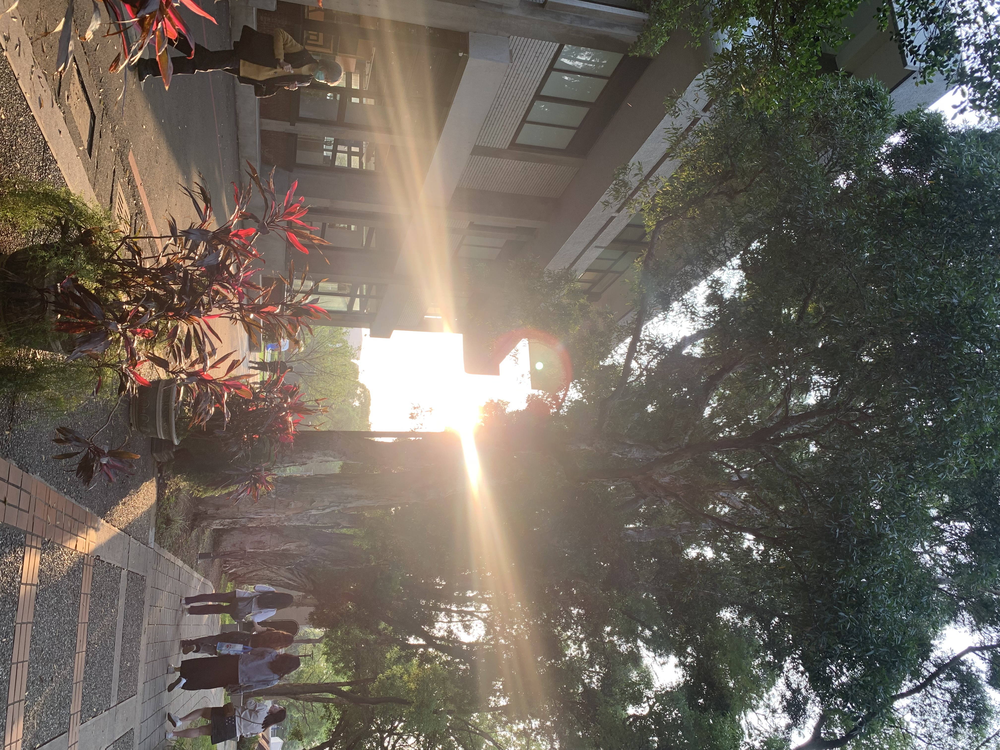
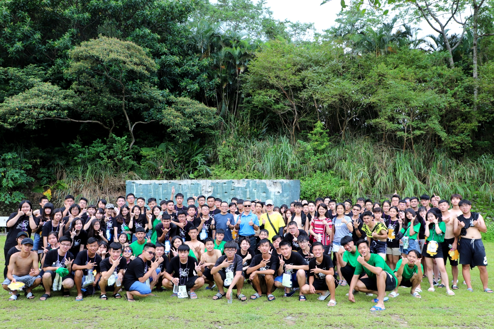
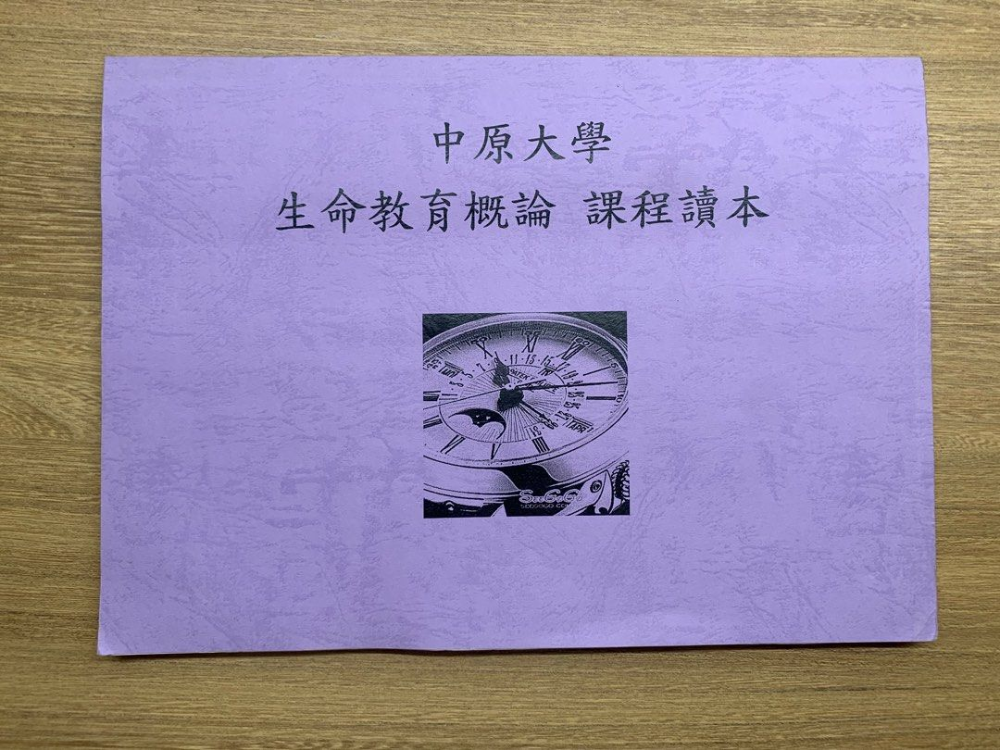
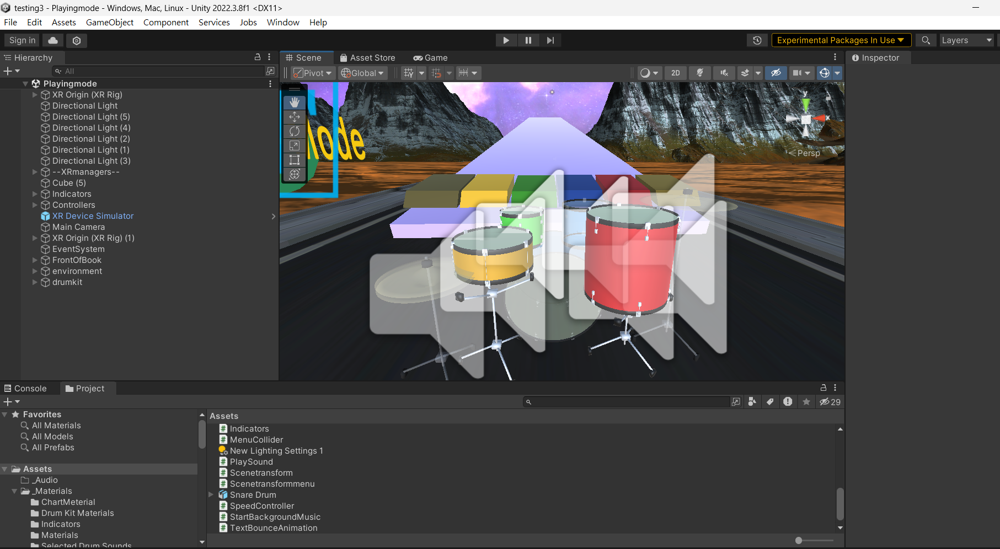

程式熟練度百分比
HTML
Python
C#
Css
拿手技能
skill1
Unity遊戲製作
我曾在期末專題中VR元宇宙作為主題，使用Unity進行遊戲開發，這讓我深入了解了遊戲開發的流程和技術。在這個過程中，我學會了如何設計遊戲場景、創建角色和動畫、實現遊戲機制以及優化性能。這段經歷不僅提升了我的程式設計能力，還培養了我對於音樂、美術，以及色彩的應用。雖然自己目前對於遊戲開發還有很長遠的路要走，但過去對於Unity的開發經驗能夠讓我能夠快速上手並有效地開發各種類型的遊戲。
skill2
拍照攝影
人類總是很容易遺忘的，無論是好的事情或者是壞的事情，過了一段時間後，舊的記憶就被新的資訊沖刷、帶走。我們過去所體會到的美以及感動，很有可能早就已經在意識中變質，失去當初的那份韻味，因此我總是喜歡為觸動我情緒的場景留影，試圖將那一分、那一刻的意識和情感留存，在往日回頭翻看之時，才能重新認識到自己曾經經過了怎麼樣的一段日子、自己究竟以沈麼樣的姿態活著。
我利用課餘持續進行自重體能訓練已有一段時間。這種訓練方式強調使用自身體重來進行各種訓練動作，如俯臥撐、引體向上、深蹲等，以提高肌肉力量、耐力和柔軟性。透過自重訓練，在這段期間我稍微增強了身體素質，還培養了自律和堅持的品質。這些訓練不僅讓我身體更靈活，也讓我擁有更好的身心健康。
skill3
體能訓練
校園經歷一

參加資管系和心理系合辦的迎新宿營是我大一生活中一段難忘的經歷。在這個活動中，每位學長姊都展現了非常穩健的領導風範，他們熱心地帶領我們參與各項活動，讓我們感受到了大學生活的熱情和活力。儘管活動中睡眠時間嚴重不足，但這段經歷讓我結識了許多新朋友，也讓我更加融入了學校的大家庭。這次宿營不僅豐富了我的大學生活，也讓我成長了許多，可以說是為我的大學生活做了一個美好的開場。
校園經歷二

在大學三年的課程當中，江蘭貞老師的生命教育概論是我上過最有深度的一門課，因為她在課堂中所分享的案例都是她自己親身的經歷，而且還不是一般的經歷，是有關於他在急診室擔任助理護士期間，所經歷的攸關生與死的沉重故事，不僅僅是他人生命的誕生以及凋零，亦或是她在高壓的情境中是如何突破萬難，提升生命的境界。我只想說，這門課我雖然沒有過，但是我真的很感恩這位老師在課堂中所分享的每一則寶貴生命故事。
校園經歷三
